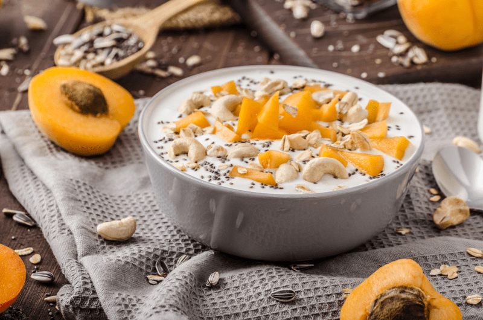
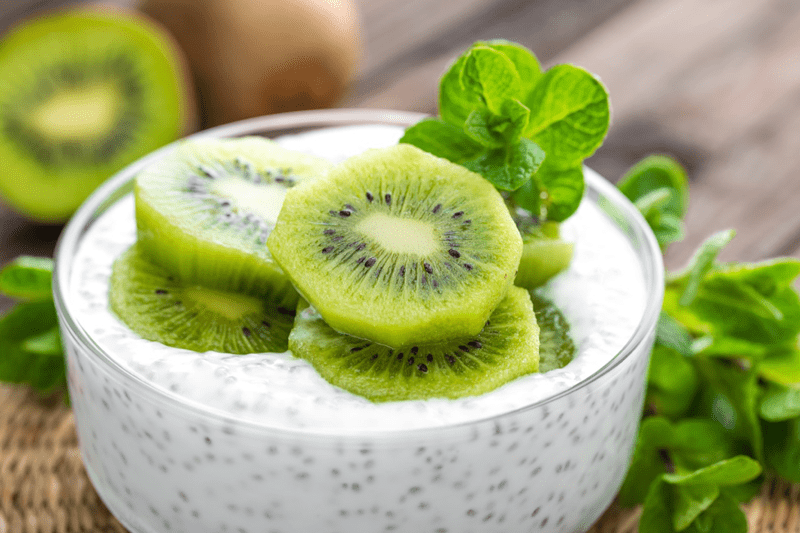

Nourishing and Quick Breakfast Ideas
Breakfast is my favorite meal of the day. It’s a time to restart after a long night’s sleep, nourish your body and give it what it needs to cope with whatever your day has in store. It’s also a quiet, quality time for my husband me to spend together, plan out our day, and to reminisce about life in general.

Breakfasts… are they the best way to start your day? That is the million-dollar question when you research this topic on the Internet. I have read:
- “Missing your morning meal confuses your hunger hormones, setting you up to overeat later on in the day.”
- “Breakfast is the most important meal of the day.”
- There is the Leangains protocol, which involves skipping breakfast and restricting your daily eating period to 8 hours, such as 1–9 p.m. Then you fast for 16 hours in between.
- “A healthy breakfast doesn’t just provide you energy to seize the day, it jumpstarts your metabolism, balances blood sugar levels, assists in weight management, even promotes heart health and improves cognitive function.”
- “Eating breakfast sets your body up for cravings.”
- “Start the day by having breakfast within an hour after waking up helps to get your metabolism started for the day.”
- “Studies show eating breakfast improves attention and academic achievement.”
The views on this matter go on and on. So how do we know what approach to believe? My take on this matter is to listen to your internal cues. I have tried making breakfast a priority; I have tested intermittent fasting, I have dabbled with just waiting a bit longer into the day before I eat.
What worked best for me? Well, they all did. It just depended on my lifestyle at that moment. BUT I will say that when I skip breakfast, I tend to have better control over my cravings throughout the rest of the day. BUT on the other hand (and I am going to get a bit personal here), I find that when I don’t eat breakfast, my bowel movements don’t always happen that day. Nothing like getting personal, but this is and has been an ongoing issue for me. So I pretty much do what I have to to keep things moving. Another thing I noticed was if I started my day with high carb foods, my hunger never feels satisfied.
Listen to YOUR body
I will repeat it “Learn to listen to your body, access your current lifestyle. health status, stress & activity levels.” Try eating in the morning and see how your day goes. Do you feel more energetic? Do you get hungrier quicker for the next meal? Do you feel weak if you don’t eat? Then try skipping breakfast and ask yourself the same questions. And heck, get all wild on me and eat breakfast some days and not others. Lol, I can’t tell you what to do, but I do know that I have read a lot of studies that support both ends of the spectrum.
For the Breakfast Eater
I am going to post a few links to some quick breakfast ideas. You decide what fits into your schedule and dietary needs. Most of these recipes require some prep work, but they can be made up in advance and enjoyed throughout the week. Fresh fruit is popular, QUICK, and straightforward breakfast, but I feel fruit is a treat due to the high levels of sugar.
Vegetable Based Porridge
A sneaky way to veggies into the body! You can make a large plain-based cauliflower porridge, store it in the fridge, and add new and exciting flavors each morning.
Oatmeal Recipes
Overnight oatmeal makes for a great grab-and-go breakfast! Gather some ingredients, place them in a jar, and let them do their magic while you get your beauty sleep.
Muesli Recipes
These require some prep time, but once made, they can store them on the countertop for several weeks, or you can extend their shelf-life up to three months in the freezer. They are very hardy and satiating.
Vegan Egg Dishes
I know this post refers to “quick” breakfast ideas. Vegan eggless dishes do require more time but again can be made up in advance and enjoyed throughout the week. I didn’t want to overlook the “egg” lovers here.

Yogurt Lovers
Here are some delicious vegan yogurts that are either cashew or young Thai coconut-based. These yogurts can be dressed up with an array of nutritious superfoods!
© AmieSue.com